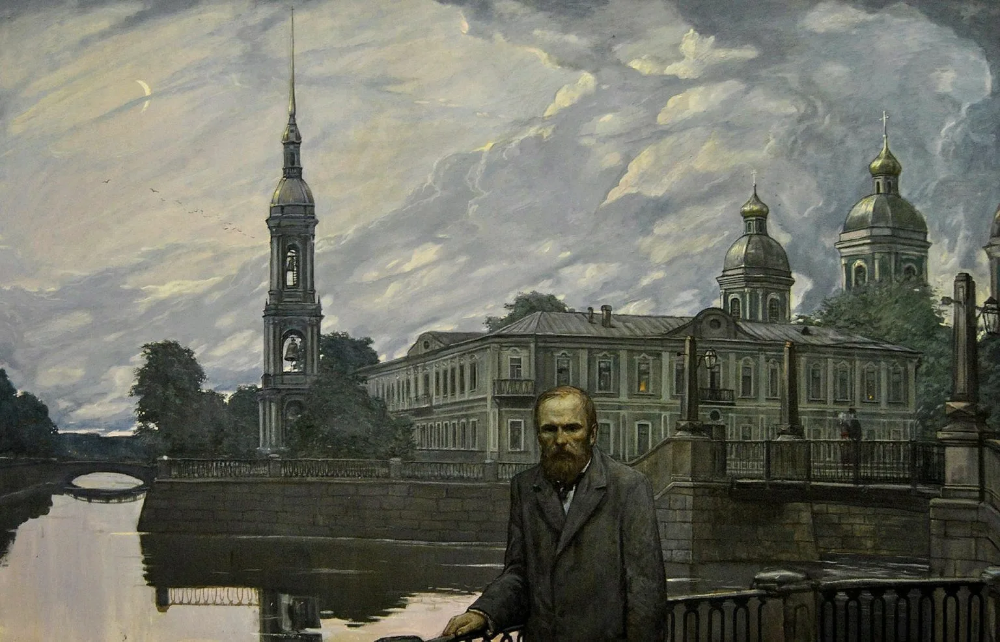
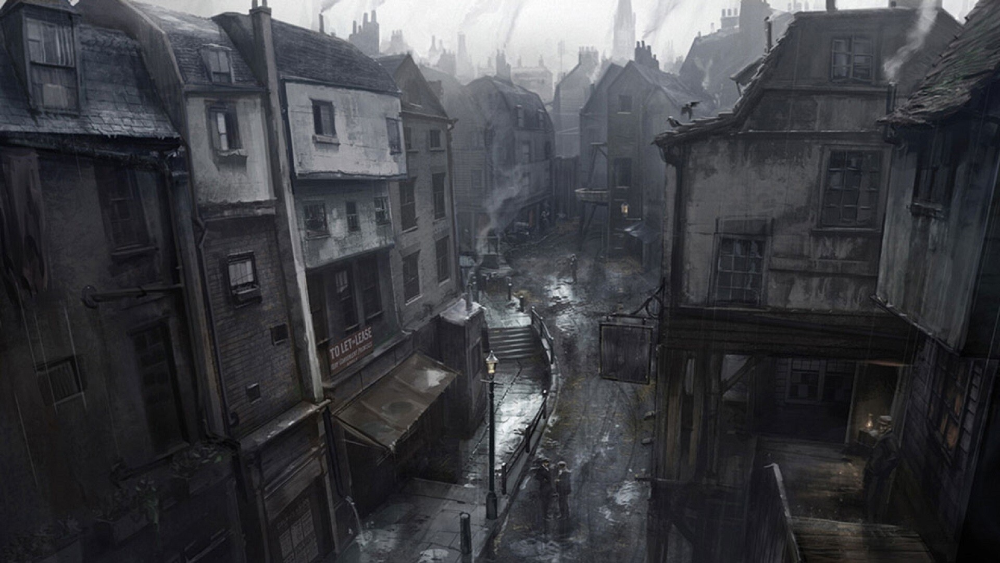
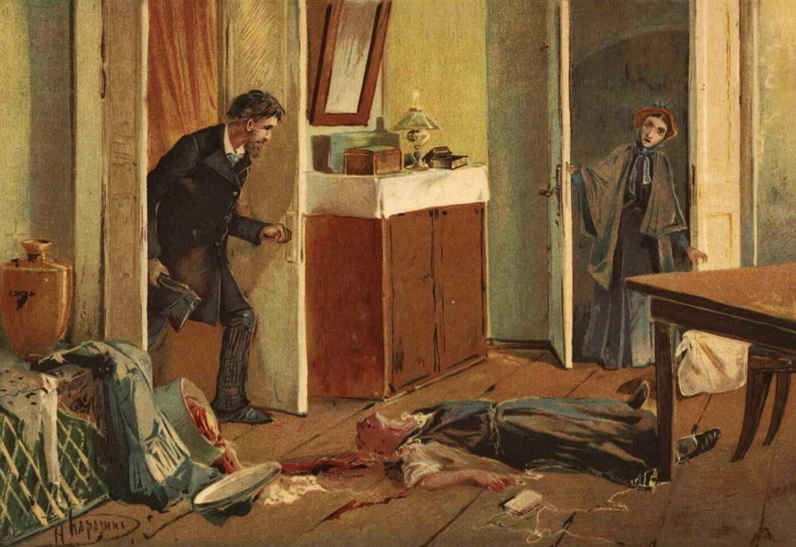
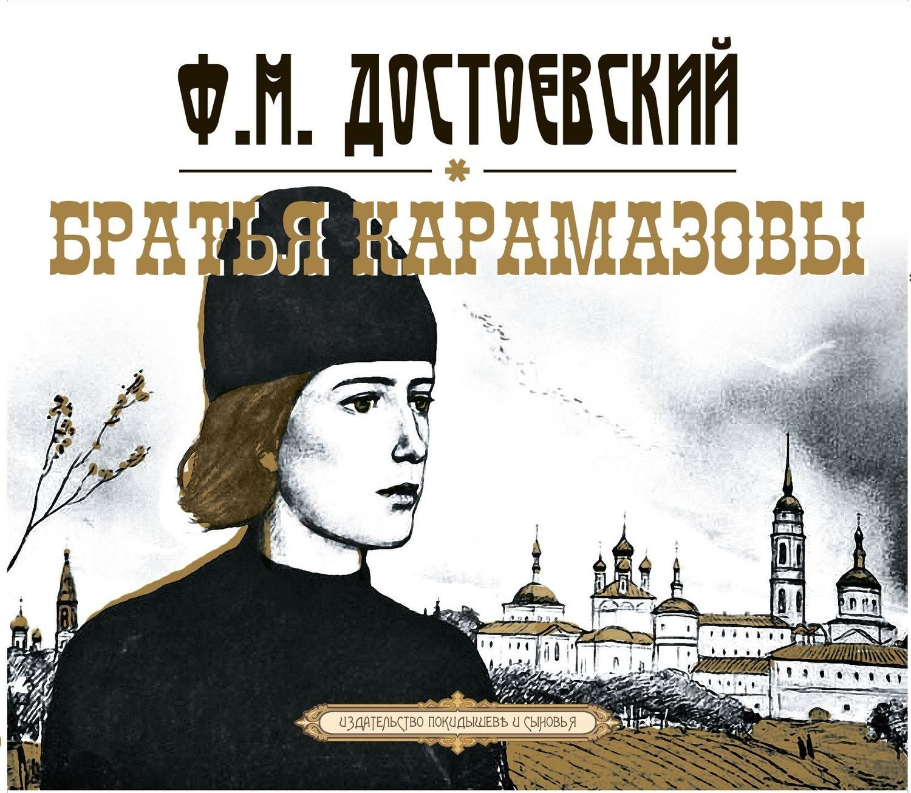

Предлагаем вас сначала ознакомиться с биографией или историей создания произведений
Федор Михайлович Достоевский (1821-1881) – один из величайших русских писателей, чье творчество и личность до сих пор вызывают споры и вдохновляют читателей. Он пережил унизительную каторгу за участие в кружке петрашевцев, страдал от эпилепсии, не раз испытывал финансовые трудности. Но именно эти испытания закалили его характер и сформировали уникальный стиль письма, сочетающий философские размышления, глубокий психологизм, яркий язык и социальную остроту.
Фёдор Достоевский, один из величайших российских писателей, создал произведения, которые затрагивают глубинные вопросы человеческой психологии и морали. Его "пятикнижия" — это не просто романы, а настоящие философские трактаты, которые поднимают важнейшие темы: свобода воли, зло и добро, страдание и искупление. Знакомство с этими произведениями станет для читателя путешествием в мир глубокой мысли и эмоциональных переживаний.
Каждый роман предлагает уникальный взгляд на внутренний мир человека, позволяя читателю задуматься о собственных ценностях и жизненных выборах. Приглашаем вас погрузиться в этот литературный мир, где каждая страница наполнена чувством, напряжением и философскими размышлениями. Позвольте себе открыть для себя глубокую мудрость Достоевского и ощутить его влияние на нашу современность.

"Идиот" - роман о князе Мышкине, добром и наивном человеке, который пытается принести добро в мир, полный зла и лицемерия.
"Бесы" - роман о столкновении революционных идей и традиционных ценностей, где борьба добра и зла разворачивается на фоне политических интриг и социальных потрясений.

"Преступление и наказание" - история Родиона Раскольникова, студента, который убивает старуху-процентщицу, пытаясь доказать свою теорию о "сверхчеловеке".

"Подросток" - автобиографичный роман о взрослении Аркадия Долгорукова, который борется с отчуждением, недопониманием и ищет свое место в мире.

"Братья Карамазовы" - философский роман о судьбе семьи Карамазовых, где поднимаются вопросы веры, морали, добра и зла, любви и смерти.